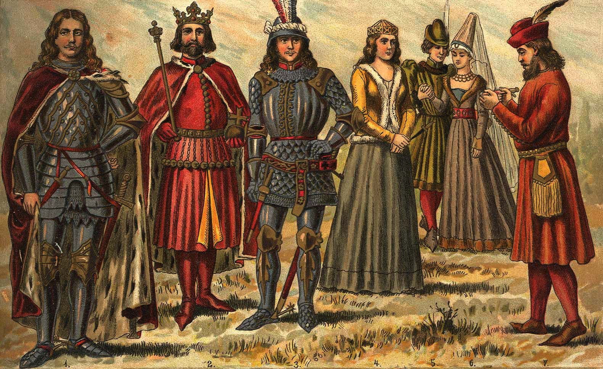

Feudalism

Was A dominant social sytem Used in western midieval period between 12th - 5th century .This created social system where all social class are needed.This structures western society around relationships derived from holding of lands known as fiefdom in exchange of labor.However feudalism gave kings almost unlimited power and women living in midieval Europe Almost no rights.
The decline of Feudalism began with the blackdeath, the blackdeath eliminated the over population issue of Europe meaning there's significantly less people.It cause a lot of destruction and damage destroying food production leading to famines.